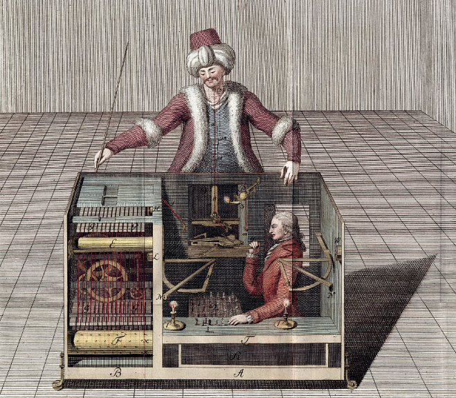

🖼 Bienvenido a Retroterm.ai
Explora el universo retrofuturista inspirado en terminales clásicas y juegos tipo Fallout.
Zona interna no documentada. Explora los módulos y descubre secretos.
Explora el universo retrofuturista inspirado en terminales clásicas y juegos tipo Fallout.
Encuentra minijuegos interactivos, códigos secretos y contenido oculto dentro del sistema.
En 1770, el inventor húngaro Wolfgang von Kempelen presentó ante la corte de la emperatriz María Teresa de Austria una de las mayores ilusiones tecnológicas de la historia: el Turco Mecánico, un autómata aparentemente capaz de jugar al ajedrez y vencer a casi cualquier rival humano.
La máquina consistía en un maniquí vestido de turbante y ropajes otomanos, sentado frente a un tablero de ajedrez sobre un gran gabinete de madera. Von Kempelen abría los cajones del mecanismo para demostrar públicamente su complejidad interna — engranajes, palancas, cilindros — convenciendo al espectador de que todo era pura mecánica.
Durante más de 80 años el Turco viajó por Europa y América, derrotando a figuras como Napoleón Bonaparte o Benjamin Franklin. El secreto era más humano que mecánico: dentro del gabinete se ocultaba un maestro de ajedrez que controlaba los movimientos mediante un sistema de imanes e iluminación de velas.
El Turco fue destruido en un incendio en 1854. Su legado inspiró directamente los primeros debates sobre inteligencia artificial y máquinas pensantes. Edgar Allan Poe escribió un ensayo intentando desentrañar su mecanismo. Charles Babbage lo estudió antes de diseñar su máquina analítica.

Grabado original del Turco Mecánico, 1783.
> SISTEMA: archivo relacionado desbloqueado en LOGS. Introduce el año de su presentación.
Registros del sistema. Algunos archivos requieren autorización.
Introduce el código secreto:
Bienvenido al núcleo del sistema RETROTERM.AI. Aquí se encuentran los datos y recursos principales.
Retroterm.ai nace como un entorno retrofuturista inspirado en terminales clásicas y sistemas tipo Fallout. Desarrollado por Iván Brihuega como proyecto ASIR 2025.

Datos internos sobre la actividad del sistema.
| Módulo | Usuarios | Proyectos |
|---|---|---|
| Editor | 120 | 45 |
| IA | 80 | 30 |
| Gaming | 65 | 20 |
| Articulos | 70 | 25 |
| Turco Mecánico | Unknown | Unknown |
Archivos principales del sistema RETROTERM.AI.
| Archivo | Función |
|---|---|
| index.html | HUB principal |
| portal.html | Portal secreto |
| editor.html | CODE_CRT v0.3 |
| gaming.html | Selección de videojuegos |
| articulos.html | Articulos variados |
| asistente.html | Asistente IA "ARIA" |
| red.html | Red de nodos |
| turco.html | Clasificado |
Zona clasificada. Felicidades, has desbloqueado el contenido secreto.
El Turco Mecánico lleva siglos esperando un rival digno. Ahora es tu turno.